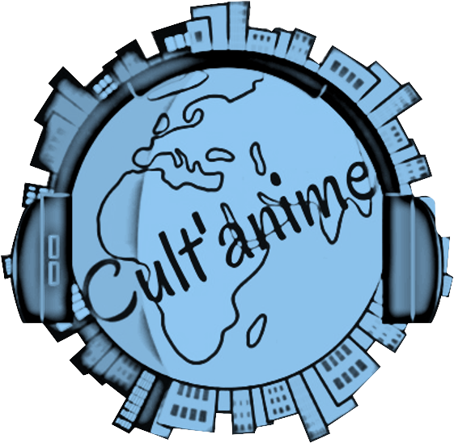

Cult'anime est une entreprise d'animation culturelle créée par une animatrice diplômée BPJEPS AS. Nous proposons des activités artistiques, de chant et de multimédia pour différents publics. Nous nous engageons à accompagner les publics en difficulté et à favoriser le lien social et intergénérationnel.
Notre animatrice est formée pour répondre aux besoins des structures médico-sociales, sanitaires, sociales, associations, écoles, entreprises, etc. Nous nous adaptons à la démarche pédagogique déjà en place dans votre établissement et nous sommes inspirés des travaux de grands pédagogues tels que J.J. JACOTOT, J.M. ITARD et P. FREIRE.
Nous sommes spécialisés dans les ateliers musicaux, artistiques et multimédia, la mise en place de chorale, les spectacles participatifs et la mise en place de projets d'animation. Nous nous engageons à vous proposer des ateliers de qualité, adaptées à vos besoins et à vos publics.